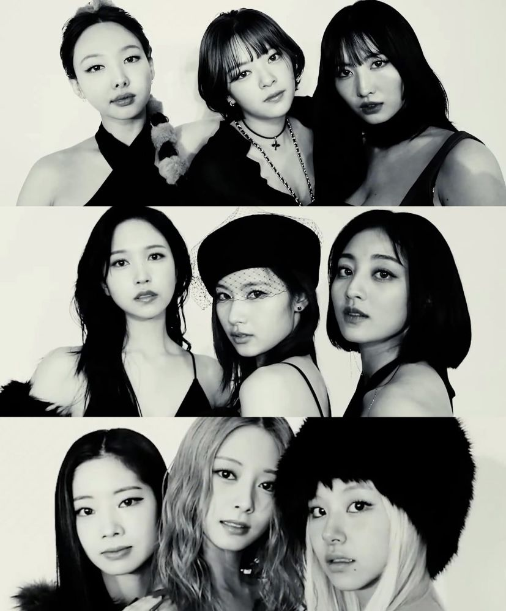

Twice (Korean: 트와이스; RR: Teuwaiseu; commonly stylized in all caps) is a South Korean girl group formed by JYP Entertainment. The group is composed of nine members: Nayeon, Jeongyeon, Momo, Sana, Jihyo, Mina, Dahyun, Chaeyoung, and Tzuyu. Twice was formed under the television program Sixteen (2015) and debuted on October 20, 2015 with the extended play (EP) The Story Begins, and has received the honorific title of "The Nation's Girl Group" in their home country.
